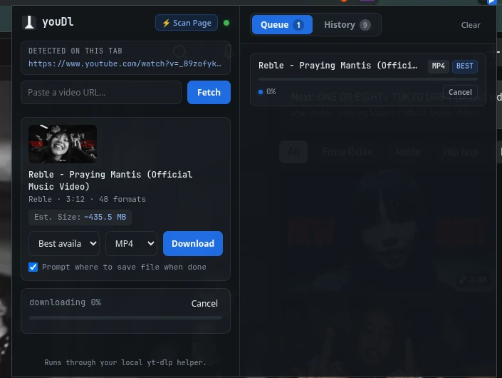
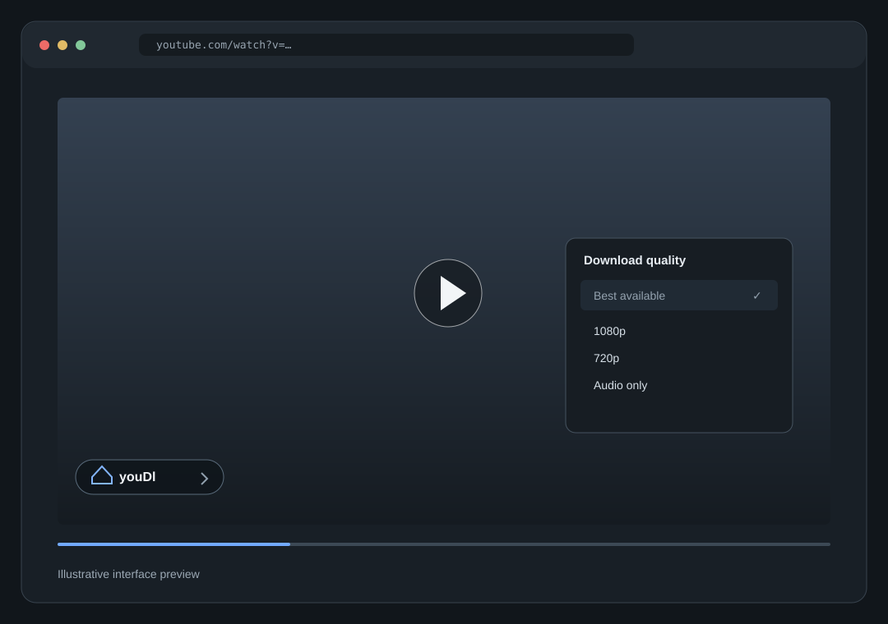
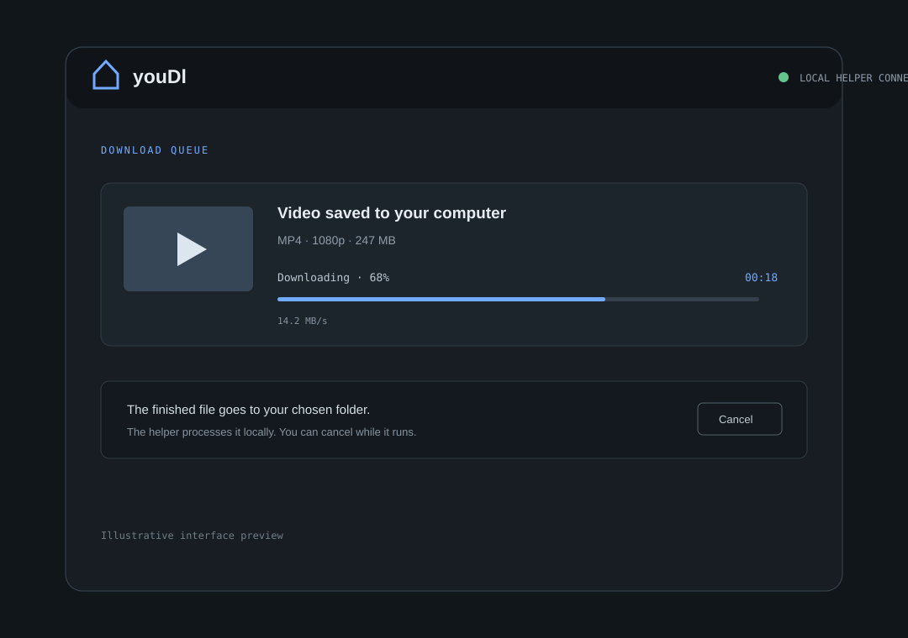

PERSONAL VIDEO DOWNLOADER
Keep the
download
local.
A browser extension for saving videos with yt-dlp running on your own computer. No account. No upload. No download service in the middle.
See where it goesYOUR BROWSER
→ YOUR COMPUTER
→ YOUR FILES
Nothing takes
the scenic route.
Your browser speaks to a tiny helper on 127.0.0.1. That helper runs yt-dlp and saves the result to your computer. The file stays yours from start to finish.
Start in your browser. Choose a video, then pick a format.
RIGHT WHERE YOU NEED IT
Find it.
Choose it.
Save it.
On a YouTube watch page, hover over the player to open the youDl control. Choose a quality, or switch to MP3 audio. For other supported sites, paste a video URL into the popup.
- Best available, 1080p, 720p, 480p or 360p
- MP4, WebM or MP3 audio
- Progress, cancel, and choose where to save

Video support depends on yt-dlp and each site's availability. youDl is for personal use, not a hosted downloader.
See it
in motion.
From the player overlay to the finished file, the controls stay simple and the work stays on your machine.


The first image is a real browser capture. The other two are interface previews.
NO MARKETPLACE ACCOUNT NEEDED
Make it
your own.
Download the bundle, start the local helper, then load the extension in your browser's developer mode. The helper listens on your computer only.
Ready to set up your local copy? Download youDl (ZIP, for personal use)
Start the helper
Install Node 18+, yt-dlp, and ffmpeg. In the extracted folder, run npm install then npm start in server/.
Load the extension
Open your browser’s extensions page, enable Developer mode, and choose Load unpacked on the included extension/ folder. Firefox uses manifest.firefox.json.
Save to your computer
Open a supported video page or paste its URL. Pick a quality and format, then save the file where you want it.